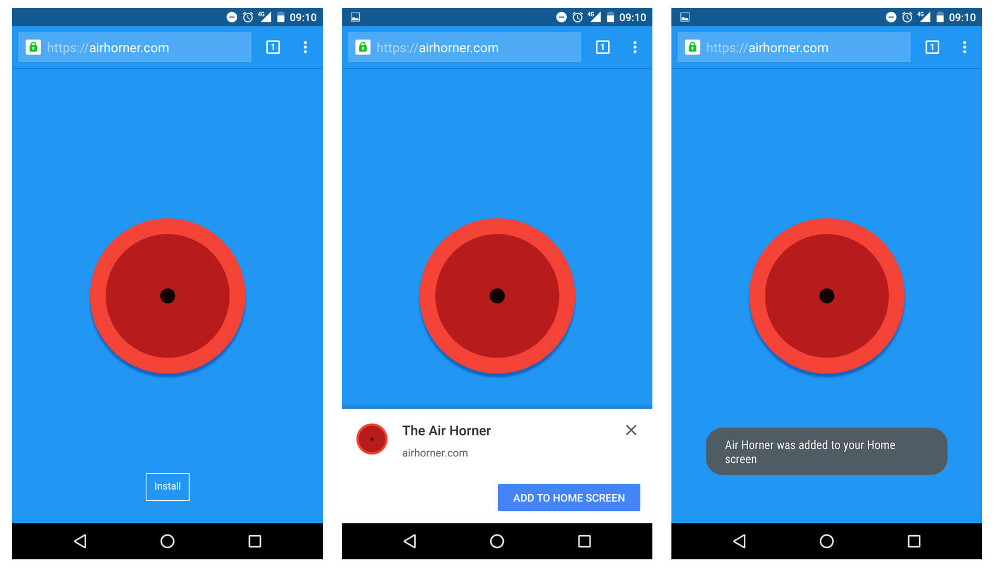
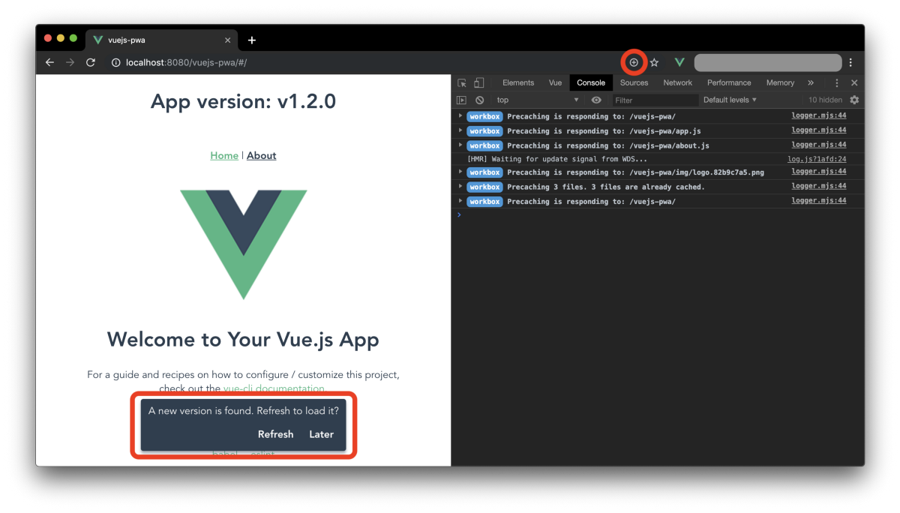

Les PWA, les applications de demain ?
Comment accéder à un service informatique ?

Petite contrainte...
- Mobile + Web => 2 services => 2 maintenances => 2 fois plus contraignant.
- Solution : les PWA !
Les P.W.Quoi ?
Les Progressive Web Applications sont un type de service délivrées depuis le Web.
{kind=link}
Version Desktop :
{kind=link}
Avantages
- Gain de temps de développement,
- Passage par les Stores non requis,
- Accés au service plus rapide,
- Mode offline disponible,
- Peu gourmand en ressources,
- Accés à certaines fonctionnalités des applications natives (notifications push, géolocalisation,...).
Inconvénients
- Pas (encore) de support sur l'ensemble des navigateurs,
- Pas d'accés à autant de fonctionnalités que les applications natives (bluetooth, géolocalisation intérieure,...).
La fin des applications mobiles natives ?
Non, car :
- Beaucoup de fonctionnalités du téléphone ne sont pas accessibles depuis une PWA,
- Le marché des applications mobiles est encore très important.
Conclusion
- Témoignage de l'ampleur phénoménale que prend le Web,
- Importance des applications mobiles dans notre économie,
- Evolution exponentielle du Web => de beaux jours à venir pour la PWA :)